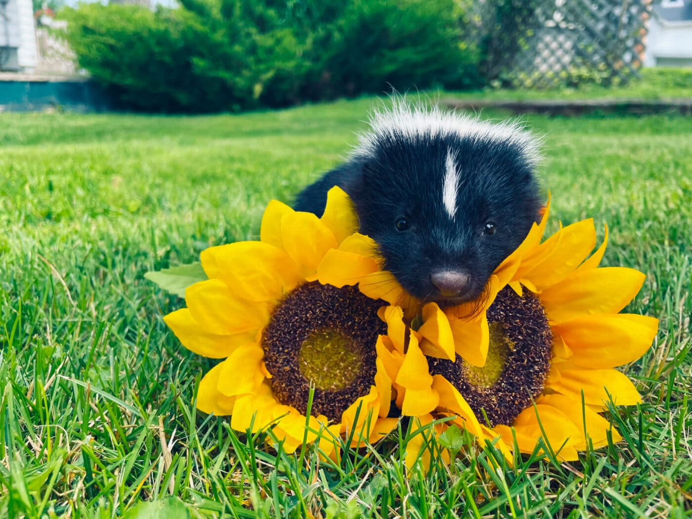

There different types of skunks in North America species, Striped Skunk (Mephitis mephitis, most common), Eastern spotted skunk (Spilogale putorius), Hooded skunk (Mephitis macroura), Hog-nosed skunk (Mephitis macroura), Hog-nosed skunk (conepatus leuconotus). The average size is about 20-30 long that would include the tail, they last about 2-4 years.The identifying features is black and white fur, strong forefeet and long claws for digging.
The most common and also recognized skunk species in the North America is the striped skunk, whose ranged extends from the southern half of canada to the norther most parts of Mexico. And the spotted skunk has a range that covers most of the US and Mexico, although the species is a bit less populous that the striped skunk. Even less common are the onces that are hooded and hog-nosed species, which that are only native to parts of the Midwest, southwest and Mexico.
the skunks are exteremely adaptable and thrive in many different habitats, as long as food and shelter are available. The reason is because they rarely travel more than 2 miles for their established dens, a skunk will typically settle down within 2 miles of a water source. They make Dense in tree hollows, hollowed out logs, brush piles, abandoned animal burrows, and underneath porches and other sturctures. Skunks will occasianlly dig their own burrows underground if their is not other shelter options are available.
The skunks prefer to dine on insects and grubs, the skunks are omnivores they consume a vast diet of both plant and animals matter. The skunks are opportunistic eaters, and their diets are flexible, often shifting with the seasons.
